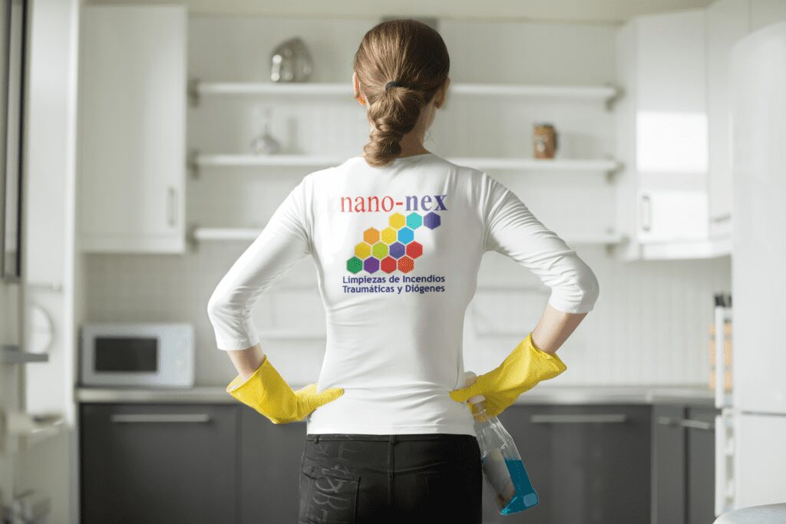

Redefiniendo la limpieza doméstica contra incendios, la limpieza de la salud y la limpieza de la toxicidad En Nano Nex, creemos que un medio ambiente limpio y saludable es la base para una vida feliz y próspera. Nuestra empresa se dedica a redefinir la limpieza doméstica contra incendios y a proporcionar soluciones superiores para la limpieza de la salud y la toxicidad. Con nuestras tecnologías innovadoras y nuestro compromiso con la sostenibilidad, estamos revolucionando la forma en que las personas abordan la limpieza y la protección en sus hogares.
Fundada en 1993, Nano Nex
Se ha establecido rápidamente como líder en el campo de la limpieza contra incendios y la limpieza de toxicidad. Nuestro equipo de científicos, ingenieros e investigadores dedicados trabaja incansablemente para desarrollar soluciones de vanguardia basadas en nanotecnología que eliminen eficazmente los residuos de incendios y eliminen las toxinas dañinas. Con nuestras fórmulas avanzadas, podemos limpiar la limpieza, la seguridad y el bienestar general de tu alojamiento después de un incendio.
Lo que distingue a Nano Nex
Es nuestra inquebrantable dedicación a la seguridad y la sostenibilidad. Entendemos los peligros potenciales que surgen de los incidentes de incendio y los residuos tóxicos que dejan atrás. Es por eso que todos nuestros productos están meticulosamente formulados para garantizar que sean seguros tanto para los seres humanos como para el medio ambiente. Priorizamos las prácticas sostenibles y utilizamos materiales ecológicos, reduciendo nuestro impacto en el planeta y proporcionando soluciones de limpieza eficaces.
Nuestra amplia gama de productos se adapta a todos los aspectos de la limpieza doméstica contra incendios, la limpieza de la salud y la limpieza contra la toxicidad. Desde soluciones de eliminación de residuos de incendios hasta sistemas de purificación de aire, Nano Nex ofrece un conjunto completo de productos que abordan los desafíos únicos que surgen de los incidentes de incendio. Nos esforzamos constantemente por desarrollar formulaciones nuevas y mejoradas, asegurando que nuestros clientes reciban las soluciones más avanzadas y efectivas disponibles.

Más allá de nuestros productos excepcionales, Nano Nex se compromete a proporcionar un servicio al cliente sin igual. Entendemos el estrés y el costo emocional que los incidentes de incendio pueden tener en las personas y las familias. Nuestro equipo experto y compasivo siempre está listo para guiar y apoyar a nuestros clientes durante todo el proceso de limpieza y recuperación. Creemos en fomentar relaciones a largo plazo con nuestros clientes, asegurando su satisfacción en cada paso.
El impacto de Nano Nex se extiende más allá de los hogares individuales. Colaboramos activamente con organizaciones de seguridad contra incendios, agencias gubernamentales e instituciones de investigación para mejorar aún más las tecnologías de limpieza contra incendios y limpieza de toxicidad. Al trabajar juntos, nuestro objetivo es crear comunidades más seguras, limpias y saludables para todos.
A medida que continuamos creciendo y expandiendo nuestro alcance, Nano Nex se mantiene firme en su misión de redefinir la limpieza de incendios domésticos y la limpieza de salud y toxicidad. Prevemos un futuro en el que los incendios ya no dejen daños duraderos y las toxinas dañinas puedan eliminarse de manera efectiva y sostenible. Con nuestras soluciones innovadoras, dedicación a la seguridad y compromiso con la satisfacción del cliente, Nano Nex está liderando el camino hacia un mundo más limpio y saludable.
Póngase en contacto con Nano Nex hoy mismo para experimentar la diferencia que nuestras soluciones superiores de limpieza contra incendios, salud y toxicidad pueden hacer en su hogar. Únase a nosotros para abrazar un futuro más seguro y saludable para todos.